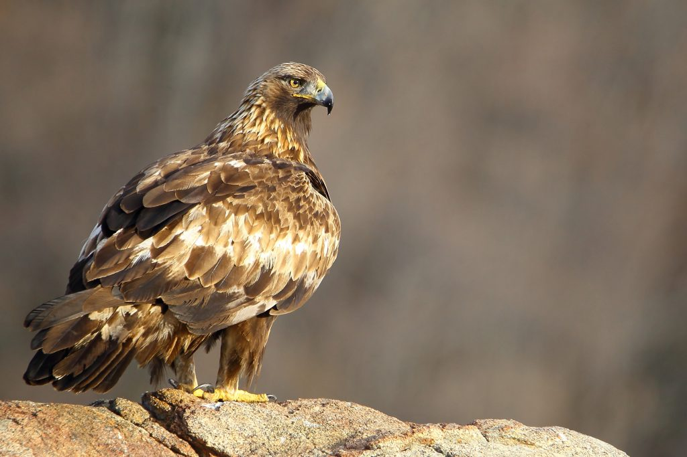
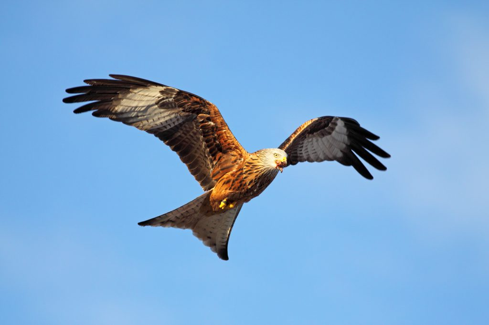
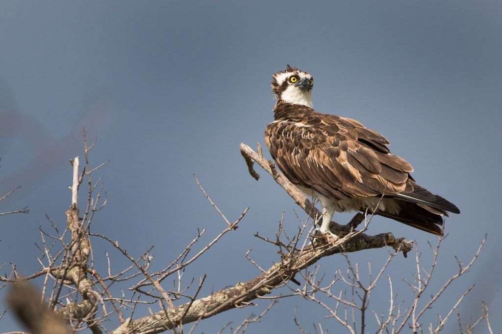

Especies
Aguila Real
Es una de las aves rapaces más conocidas y admiradas por su imponente tamaño y fuerza. Con un plumaje marrón oscuro y una envergadura que puede alcanzar los 2.3 metros, el águila real es símbolo de poder y libertad. Habita principalmente en montañas y zonas boscosas de Europa, Asia y América del Norte.
Milano Real
Es un ave de presa elegante y ágil, caracterizada por su cola ahorquillada y un plumaje marrón rojizo. Su envergadura puede llegar a los 1.6 metros. El milano real se encuentra en Europa y el noroeste de África, y es conocido por sus hábitos de carroñero, aunque también caza pequeños mamíferos y aves.
Ibis Seremita
Aunque no es un águila, el Ibis Eremita es un ave fascinante y en peligro crítico de extinción. Con su plumaje negro brillante y una curiosa cabeza calva, esta ave solía ser común en Europa, pero ahora solo se encuentra en pequeñas poblaciones en Marruecos y Siria. Es conocido por sus hábitos de alimentación en zonas rocosas y secas.